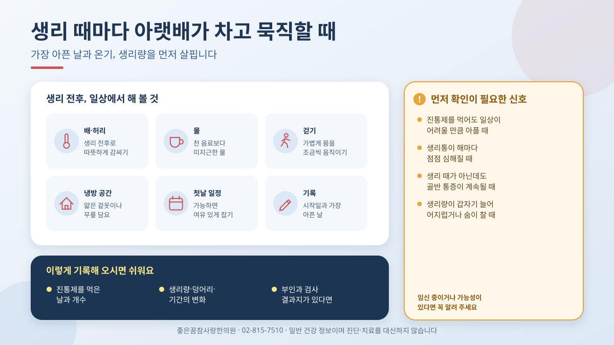

이종호 한의사 감수좋은꿈참사랑한의원 대표원장 (한의사 면허번호 19769)발행 2026-11-23 · 수정 2026-11-25
이 글의 차례
생리 때마다 아랫배가 차고 묵직하다면, 통증이 생리 며칠째 가장 심한지, 따뜻하게 하면 편해지는지, 생리량과 평소 손발의 온기는 어떤지를 먼저 살핍니다. 다만 생리통이 해마다 심해지거나 진통제로도 일상이 어렵다면 부인과 검사를 먼저 또는 함께 받으셔야 합니다. 핫팩을 대야 겨우 견딜 만하고, 겨울이나 냉방이 강한 사무실에서 더 심하다는 분이 많습니다.
생리통은 보통 생리 시작 직전이나 첫날에 시작해 하루 이틀 가장 심하고, 2~3일 안에 줄어드는 경우가 많습니다. 이런 흐름에서 벗어나 생리가 끝난 뒤에도 아프거나, 예전보다 통증이 길어지고 세졌다면 부인과에서 자궁과 난소 상태를 먼저 확인하는 것이 순서입니다.
왜 이런 불편이 생길 수 있나요
- 생리 중에는 자궁이 수축하며 생리혈을 내보내는데, 이 수축이 강하면 아랫배가 묵직하고 아플 수 있습니다.
- 몸이 차고 활동량이 적으면 아랫배가 더 무겁고 차갑게 느껴진다는 분이 많습니다.
- 오래 앉아 있는 생활은 골반 주변의 순환을 더디게 해 묵직함을 더 느끼게 할 수 있습니다.
- 냉방이 강한 곳에 오래 있거나 찬 음료를 자주 마시는 습관이 불편을 더할 수 있습니다.
- 생리통이 뒤늦게 새로 생겼거나 생리량이 함께 늘었다면 자궁내막증, 자궁근종 같은 원인을 부인과에서 확인할 필요가 있습니다.
- 해마다 심해지는 생리통은 자궁 쪽 질환과 관련될 수 있어 확인이 필요합니다. 한의학에서는 아랫배의 온기와 생리 양상을 함께 살핍니다.
먼저 이렇게 여쭙니다
- 통증은 생리 며칠째에 가장 심한가요?
- 따뜻하게 하면 편해지나요?
- 손발이 평소에도 찬 편인가요?
- 진통제를 얼마나 자주 드시나요?
- 생리량이나 덩어리가 예전과 달라졌나요?
- 생리 중에 허리나 허벅지까지 묵직함이 퍼지나요?
- 배변할 때나 성관계 때 아랫배 깊은 곳이 아픈 적이 있나요?
스스로 점검해 보세요
- 생리 첫날이나 둘째 날 통증이 가장 심하고 사흘쯤 지나면 줄어든다
- 배를 따뜻하게 하면 묵직함이 조금 덜하다
- 평소에도 손발이 차고 겨울이나 냉방 아래서 더 힘들다
- 찬 음료나 아이스커피를 하루 한 잔 넘게 마신다
- 하루 대부분을 앉아서 지낸다
- 진통제를 먹는 날이 해마다 늘고 있다
- 생리량이 늘어 한두 시간마다 패드를 갈아야 하는 날이 있다
앞의 다섯 가지가 주로 해당한다면 생활에서 몸을 따뜻하게 하고 움직이는 것부터 해 볼 수 있습니다. 마지막 두 항목 가운데 하나라도 해당한다면 부인과 검사를 먼저 또는 함께 받아 보시길 권합니다.
일상에서 먼저 해 볼 수 있는 것
- 생리 전후로 배와 허리를 따뜻하게 감싸기
- 찬 음료보다 미지근한 물 마시기
- 가벼운 걷기로 몸을 조금씩 움직이기
- 냉방이 강한 곳에서는 얇은 겉옷이나 무릎 담요 쓰기
- 생리 첫날 일정은 가능하면 여유 있게 잡기
생리 예정일 며칠 전부터는 찬 음식과 차가운 바닥에 오래 앉는 일을 줄이고, 앉아서 일하는 분은 한 시간에 한 번쯤 일어나 골반을 천천히 돌리거나 복도를 가볍게 걸어 보세요. 잠들 때 핫팩을 배에 댄 채 자면 저온 화상이 생길 수 있어 잠자리에서는 떼어 두는 것이 안전합니다.
아침을 거르고 진통제를 빈속에 먹으면 속이 쓰릴 수 있으니, 약은 약사나 의사의 안내대로 드시고 가벼운 식사를 함께 챙기세요.
예를 들면 이런 경우입니다
- 예를 들어 냉방이 강한 사무실에서 하루 종일 앉아 일하는 직장인이라면, 자리의 냉방 바람 방향과 하루 음료, 앉아 있는 시간을 함께 여쭙고 생리 전후에 바꿀 수 있는 것부터 정리합니다.
- 예를 들어 생리 첫날마다 학교나 학원 수업을 듣기 힘든 학생이라면, 통증이 시작되는 시각과 진통제를 먹는 때, 아침 식사 여부를 함께 살피고 보호자와 함께 부인과 확인이 필요한지도 안내합니다.
- 예를 들어 출산 뒤 생리가 다시 시작되면서 아랫배가 예전보다 더 묵직하다는 분이라면, 회복 과정과 생리량의 변화를 함께 여쭙고 산부인과 확인 여부부터 살핍니다.
얼마나 지켜보고, 언제 상담할까요
- 늘 비슷한 정도의 생리통이라면 한두 주기 동안 따뜻하게 하기, 가벼운 걷기, 찬 음료 줄이기를 해 보며 통증 기록을 남겨 볼 수 있습니다.
- 진통제를 먹어도 학교나 일을 쉬어야 하는 달이 이어진다면 여러 주기를 기다리지 말고 부인과와 상담을 함께 받아 보시길 권합니다.
- 생리통의 양상이 예전과 달라졌다면(시작 시기, 기간, 아픈 위치) 다음 생리 전에 진료를 받아 보세요.
- 이럴 땐 바로 확인하세요. 갑자기 아랫배가 심하게 아프면서 열이 나거나, 임신 가능성이 있는데 배가 아프고 출혈이 있거나, 출혈이 많아 어지럽고 숨이 차다면 기다리지 말고 산부인과나 응급실을 찾으세요.
한의원에서 함께 살필 수 있는 경우
- 생리 때마다 아랫배가 차고 아픈 경우 몸의 온기와 생리 양상을 함께 살핍니다.
- 생리통과 함께 소화가 불편한 경우 식사와 소화를 함께 살핍니다.
- 생리 뒤 기운이 크게 떨어지는 경우 피로와 식사, 잠을 함께 살핍니다.
좋은꿈참사랑한의원에서는 먼저 생리 주기와 통증의 모습을 충분히 듣고, 진맥과 복진으로 아랫배의 온기와 긴장을 살핍니다. 그다음 침, 뜸·온열, 한약 상담 가운데 상태에 맞는 방법을 정하고, 부인과 검사가 필요하다고 판단되면 먼저 안내합니다. 귀가 전에는 생리 전후에 해 볼 생활 요령을 함께 정리해 드립니다.
처음 오시면 문진으로 생리 주기와 통증이 시작되고 끝나는 날, 진통제를 드시는 때를 듣고 맥부터 짚어 본 뒤, 누워서 아랫배와 허리의 온기, 눌렀을 때 불편한 자리를 함께 살핍니다. 부인과 초음파 결과가 있다면 함께 보고, 아직 검사를 받지 않았는데 통증이 점점 심해졌다면 검사를 먼저 안내합니다.
한약은 몸 상태를 살핀 뒤 필요하다고 판단될 때 상담하며, 생리통이 얼마 만에 줄어든다고 미리 단정하지 않습니다. 임신 가능성이 있거나 피임약·호르몬제·진통제를 드시고 있다면 상담 전에 먼저 알려 주세요. 비용이나 보험 적용은 방문 전 전화로 확인해 주세요.
이렇게 기록해 오시면 상담이 쉬워집니다
- 생리 시작일과 통증이 가장 심한 날
- 진통제를 먹은 날과 개수
- 생리량, 덩어리, 기간의 변화
- 통증이 심했던 날의 옷차림과 있었던 곳(냉방, 바깥 추위)
- 부인과 초음파 등 검사 결과가 있다면 결과지
이런 증상은 먼저 확인이 필요합니다
- 진통제를 먹어도 일상이 어려울 만큼 아픈 경우
- 생리통이 해마다 점점 심해지는 경우
- 생리 때가 아닌데도 골반 통증이 계속되는 경우
- 생리량이 갑자기 크게 늘어 어지럽거나 숨이 찬 경우
- 갑자기 심한 아랫배 통증과 열이 함께 있는 경우
- 임신 가능성이 있으면서 배 통증이나 출혈이 있는 경우
임신 중이거나 임신 가능성이 있다면 진료 전에 꼭 알려 주세요. 복용 중인 호르몬제나 다른 약은 처방한 의사와 상의 없이 줄이거나 끊지 않습니다.
함께 읽으면 좋은 글
- 생리통이 심할 때 한의원에서는 무엇을 먼저 묻고, 언제 병원 검사가 필요한가요?
- 생리통이 있을 때 배를 따뜻하게 하면 괜찮을까요?
- 생리통이 언제 시작되고 언제 가장 심한지는 어떻게 기록하나요?

여쭙는 것
- 통증은 생리 며칠째에 가장 심한가요?
- 따뜻하게 하면 편해지나요?
- 손발이 평소에도 찬 편인가요?
생활에서 해 볼 것
- 생리 전후로 배와 허리를 따뜻하게 감싸기
- 찬 음료보다 미지근한 물 마시기
- 가벼운 걷기로 몸을 조금씩 움직이기
한의원에서 함께 살필 것
- 생리 때마다 아랫배가 차고 아픈 경우 몸의 온기와 생리 양상을 함께 살핍니다.
- 생리통과 함께 소화가 불편한 경우 식사와 소화를 함께 살핍니다.
- 생리 뒤 기운이 크게 떨어지는 경우 피로와 식사, 잠을 함께 살핍니다.
먼저 확인이 필요한 신호
- 진통제를 먹어도 일상이 어려울 만큼 아픈 경우
- 생리통이 해마다 점점 심해지는 경우
- 생리 때가 아닌데도 골반 통증이 계속되는 경우
한눈에 보는 표
| 구분 | 핵심 |
|---|---|
| 여쭙는 것 | 통증은 생리 며칠째에 가장 심한가요? 따뜻하게 하면 편해지나요? |
| 생활에서 해 볼 것 | 생리 전후로 배와 허리를 따뜻하게 감싸기 찬 음료보다 미지근한 물 마시기 |
| 한의원에서 함께 살필 것 | 생리 때마다 아랫배가 차고 아픈 경우 몸의 온기와 생리 양상을 함께 살핍니다. 생리통과 함께 소화가 불편한 경우 식사와 소화를 함께 살핍니다. |
| 먼저 확인이 필요한 신호 | 진통제를 먹어도 일상이 어려울 만큼 아픈 경우 생리통이 해마다 점점 심해지는 경우 |
자주 묻는 질문
핫팩을 오래 대도 괜찮나요?
저온 화상이 생길 수 있어 옷 위에 대고 시간을 나눠 쓰시길 권합니다.
부인과 초음파를 먼저 받아야 하나요?
통증이 심해지거나 양상이 바뀌었다면 부인과 검사를 먼저 또는 함께 권합니다.
진통제를 먹어도 되나요?
필요할 때 드시는 진통제는 진료 때 종류와 횟수를 알려 주시면 됩니다. 자주 드셔야 할 정도라면 부인과 확인을 함께 권합니다.
생리 중에도 진료를 받을 수 있나요?
네. 접수나 상담 때 생리 중이라고 먼저 알려 주시면 그날의 양과 통증에 맞춰 자세와 온열 여부를 정합니다.
진료 시간은 어떻게 되나요?
좋은꿈참사랑한의원은 평일 09:30~20:00(점심 13:00~14:00), 토·일·공휴일 09:30~15:00에 진료합니다.
좋은꿈참사랑한의원은 재진 때 지난번 이야기부터 이어서 여쭙니다. 진료시간과 예약은 오시는 길에서 확인하세요.
어디서 상담받을 수 있나요?
좋은꿈참사랑한의원은 서울 동작구 만양로2길 2 신성빌딩 3층·5층(서울 동작구 상도동, 7호선 상도역 3번 출구 근처)에 있습니다. 한의사 3명(이종호 대표원장, 조영기 수석진료원장, 정원영 진료원장)이 진료합니다. 진료시간은 평일 09:30~20:00(점심 13:00~14:00), 토·일·공휴일 09:30~15:00이며, 방문 전 전화로 확인을 권합니다. 예약은 네이버 예약, 카카오톡 상담, 전화 02-815-7510로 받습니다.
이 글은 일반적인 건강 정보이며 개인의 진단이나 치료를 대신하지 않습니다. 증상이 있거나 복용 중인 약이 있다면 진료를 통해 확인하세요. 치료 효과는 개인마다 다를 수 있습니다.
작성 기준: 일반적으로 알려져 있는 건강 정보를 참고해 정리했습니다(대표원장 감수). 증상 기록은 1~2주 동안 하루 1회, 비슷한 시간에 적어 오시면 지난 상태와 비교하기 쉽습니다.